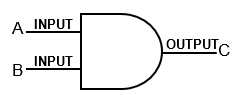
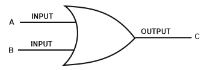
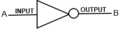
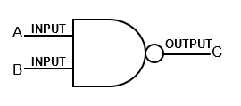
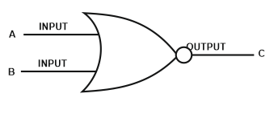
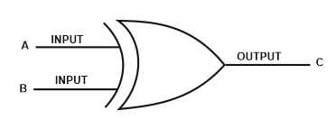
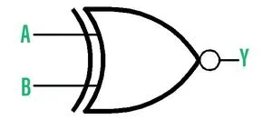

Unlocking the Mysteries of Logic Gates: A Dive into Digital Electronics
Welcome to the captivating realm of logic gates, where 1s and 0s dance to the rhythm of electronic logic. These fundamental components form the bedrock of digital electronics, enabling us to weave intricate circuits and bring digital dreams to life.
With each gate comes a unique truth table, mapping out the binary dance of inputs and outputs. Symbolic representations guide our journey, offering visual cues to the inner workings of these electronic marvels.
| Logic Gate |
Expression |
Gate Image |
Truth Table |
| AND |
A · B |

|
Truth Table
|
| OR |
A + B |

|
Truth Table
|
| NOT |
~A |

|
Truth Table
|
| NAND |
~(A · B) |

|
Truth Table
|
| NOR |
~(A + B) |

|
Truth Table
|
| XOR |
A ⊕ B |

|
Truth Table
|
| XNOR |
~(A ⊕ B) |

|
Truth Table
|
Conclusion: Embrace the Digital Frontier
As our journey through the world of logic gates draws to a close, let us embrace the boundless potential of digital electronics. With logic gates as our guiding stars, we navigate the vast expanse of digital landscapes, pushing the boundaries of creativity and ingenuity.
So, fellow explorer, venture forth into the digital frontier, armed with the knowledge of logic gates and the spirit of innovation. For in this realm of 1s and 0s, the possibilities are as limitless as our imagination.
Let the digital odyssey begin!
References: